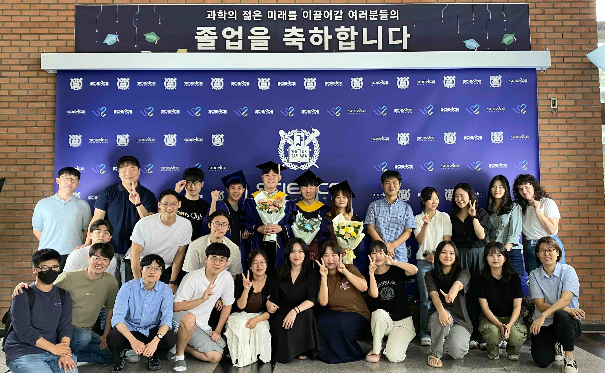
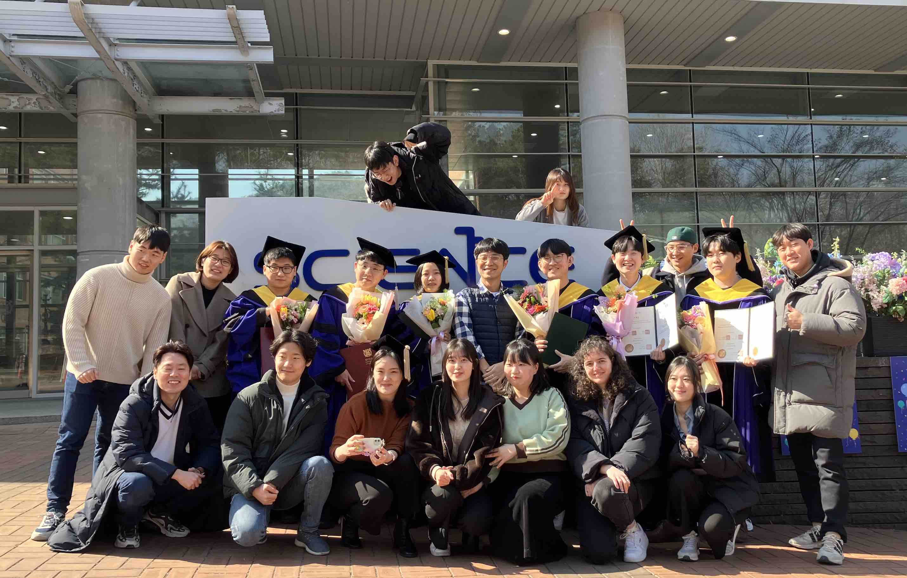

Current Members (as of April, 2025)
Research staffs
- Jung Choi (Res. Professor, webpage):
Climate change and S2D prediction
- Young-Ha Kim (Res. Professor, webpage):
Stratospheric dynamics and climate extremes
- Seok-Geun Oh (Res. Associate, webpage):
Regional climate change
- Chang-Hyun Park (Postdoc, webpage):
QBO and ENSO teleconnections
- Hyeong-Oh Cho (Postdoc, webpage): Stratosphere-troposphere
downward coupling
- Seohee Yang (Postdoc, webpage):
ML-based S2S prediction and chemistry emulation
- Sujung Yang (Admin. Staff): Administrative support
Ph.D. candidates
- Myung-Il Jung: Aerosol and atmospheric circulation (on maternity leave)
- Seung-Yoon Back: MJO dynamics
- Ye-Jun Jun: Eurasian temperature trend
- Maria Ines Cajada: Polar climate change
- Dongchan Hong: SSW and its downward coupling
- HyunSeok Yoon: Tropical cyclone
- Yeeun Kwon: AR dynamics
M.Sc. candidates
- Hyein Kim: AR variability and predictability
- Juwon Moon (AI) : ML-based S2S prediction
- Yelim Kim (AI) : Renewable energy & ML-based S2S prediction
- Seungha Lee: Hadley cell dynamics
- Joonyong Kim: ML-based weather forecast
- Seohyun Chung: AR trend
- Geonwoo Park: East Asian cyclones
Former Members
- Young-Jun Bae (M.Sc. 2/25): CTO @ Torpedo Inc. (1/25)
- Youn-Ah Kim (M.Sc. 2/25): Private sector
- Tian Wan (Visiting Student, 1/24-12/24): Ph.D. Student @ UCAS, China (1/25)
- Gyuri Kim (M.Sc. 8/24): Industrial Bank of Korea (1/25)
- Sujin Kim (M.Sc. 8/24): Private sector
- Hera Kim (Ph.D. 2/24): Postdoc @ U. Washington, USA (10/24)
- Hyeong-Oh Cho (Ph.D. 2/24): Postdoc @ SNU (3/24)
- Min-Jee Kang (Res. Associate, 3/21-11/23): Team Lead @ SNU
Climate Tech Center (12/23)
- Chang-Hyun Park (CST Ph.D. 8/23): Postdoc @ SNU (9/23)
- Beom-Seok Kim (M.Sc. 8/23): Ph.D. Student (Math) @ SNU
(9/23)
- Seo-Yeon Kim (Ph.D. 2/23): Postdoc @ Boston College, USA (1/24)
- Jaeyoung Hwang (Ph.D. 2/23): Postdoc @ Georgia Tech, USA (4/24)
- Chanil Park (Ph.D. 2/23): Postdoc @ Boston College, USA (10/23)
- Jeayeon Lee (Ph.D. 2/23): Postdoc @ Princeton U., USA (3/23)
- Yang Zhao (Postdoc, 7/20-9/22): Postdoc @ HKUST, Hong Kong (9/22)
- Jiyoung Oh (Ph.D. 8/22): Senior Manager @ KMA (6/22)
- Young-Joo Choi (CST M.Sc. 8/22): Analyst & Consultant @
Korea PDS Co., Ltd (8/23)
- DongHyun Kim (CST M.Sc. 2/22): Developer @ Mirae Asset Securities
Co. Ltd. (3/22)
- Hye-Jin Kim (Ph.D. 8/21): Junior Professional @ Samsung Fire & Marine
Ins. (6/21)
- Ji-Young Han (Res. Professor, 4/20-3/21): Senior Scientist @ KIAPS (4/21)
- Jinkyung Park (M.Sc. 2/21): Assistant Manager @ KMITI (4/21)
- Kanghyun Song (Ph.D. 2/21): Junior Professional @ Samsung Fire & Marine
Ins. (1/25)
- Sunmin Park (Postdoc, 1/19-2/21): Res. Professor @ Korea U. (3/21)
- Myung-Seo Koo (Res. Associate, 7/20-11/20): Senior Scientist @ KIAPS (12/20)
- Joonsuk Kang (M.Sc. 8/20): Ph.D. Student @ U. Chicago, USA (1/21)
- Boreum Han (CST M.Sc. 8/20): Researcher @ KMA (8/22)
- Joon-Woo Roh (Res. Associate, 1/18-1/20): Vice President @ WIZAI Inc. (1/22)
- Yuna Lim (Ph.D. 2/20): Assistant Research Scientist @
NASA/GMAO, USA (2/23)
- Sang-Wook Kim (M.Sc. 8/19): Specialist @ CJCJ (4/23)
- Enoch Jo (Res. Assistant, 7/17-7/18): Ph.D. Student @
U. Illinois, USA (8/18)
- Yeong-Eun Yoo (M.Sc. 2/17): Deputy Director @ KMA (5/18)
- Junsu Kim (Postdoc, 6/14-6/16): Scientist @ KMA (7/16)
- Sung-Ho Woo (Part Postdoc, 11/14-2/15): Res. Professor @ Chonnam Nat. U. (3/18)
- Hyo-Seok Park (Res. Associate, 3/13-4/14, webpage):
Associate Professor @ Hanyang U. (8/19)
- Barbara Winter (Postdoc, 13 @ McGill): Physical Scientist @ RPN, Canada (10/14)
- Kevin Grise (Postdoc, 11-12 @ McGill): Associate Professor @ U. Virgina,
USA (8/20)
- Patrick Martineau (Ph.D. 8/15 @ McGill): Scientist @ JAMSTEC, Japan (6/20)
- Joowan Kim (Ph.D. 8/14 @ McGill,
webpage): Associate Professor @ Kongju Nat.
U. (3/20)
- Mathieu Plante (M.Sc. 8/13 @ McGill): Ph.D. Student @ McGill U., Canada (9/14)
- Etienne Dunn-Sigouin (M.Sc. 8/12 @ McGill): Postdoc @ Bjerknes
Center, Norway (9/18)
- Ariaan Purich (M.Sc. 8/11 @ McGill): Res. Associate @
U. New South Wales, Australia (9/18)
- Ayako Yamamoto (M.Sc. 8/11 @ McGill): Scientist @ JAMSTEC, Japan (9/17)
- Naishi Lin (M.Sc. 8/10 @ McGill): Meteorologist @ ECCC, Canada (9/10)
Group Photos
- Aug., 2023

- Feb., 2023
